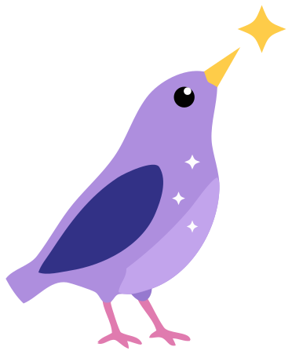

Favicon round 2
The header keeps the OG next to "Starling". These are options for the little icon in the browser tab: a yellow star on a purple tile, the star with a starling feather, and Edit B's bust on a tile for comparison. The star is the exact same star shape as in the OG logo.
In real browser tabs

Starling